#|echo: FALSE
knitr::include_graphics("Images/16S_Tree.png")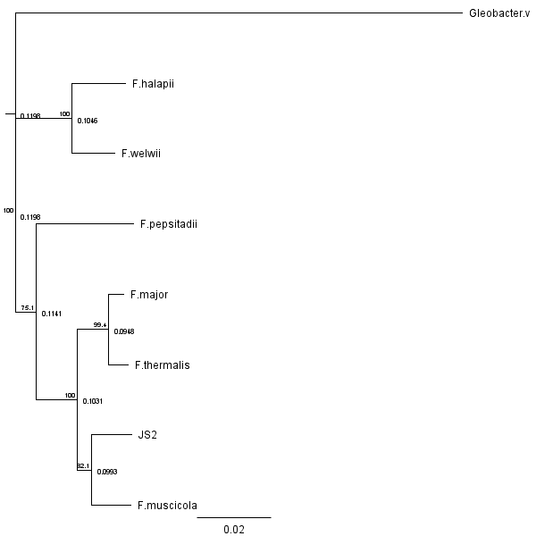
Project 3
Cyanobacteria are a diverse group of Gram-negative oxygen-evolving photoautotrophic prokaryotes which play an important role in biological nitrogen fixation. These prokaryotes produce two kinds of metabolites: primary metabolites which are essential for survival and secondary metabolites which are required for auxiliary purposes–stress responses, defense mechanisms, metal carrying, and signaling. These secondary metabolites can include compounds that act as hormones, antibiotics, allelochemicals and toxins which is important because antibiotic resistance in bacteria and fungi is becoming a problem due to resistant pathogenic bacteria. Both species of cyanobacteria used in this experiment belong to a Genera with known toxin, antibiotic, and/or fungi producing species. Thus we aim to expand upon this work by investigating these newly identified species and their production of secondary metabolites. Specifically, we aim to 1) identify both novel cyanobacteria by doing whole genome sequencing and creating phylogenetic trees based on known conserved regions as well as 16s phylogenetic trees, 2) investigate secondary metabolites by annotating the genome sequenced, 3) test the reactivity of the antimicrobial and/or antifungal compounds produced by the cyanobacteria against Gram-Positive bacteria, Gram-Negative bacteria, and a fungal species, and to evaluate the potential toxicity of both species using an Artemia salina bioassay.
1.1 Beginning of life, Cyanobacteria
Cyanobacteria or Cyanophyta are an ancient group of oxygenic photosynthesizers that are estimated to have originated around 3.0 ga. The appearance of cyanobacteria led to the Great Oxygenation Event (GOE) approximately 2.4 billion years ago thus greatly modifying the Earth and its atmospheres(Guéguen, Nolwenn, and Eric Maréchal, 2021). These changes gave rise to new ecosystems due to the difference in climate, the reduction of atmospheric carbon dioxide, and the increased sunlight. Through the acquisition of the chloroplast and mitochondria via primary endosymbiosis, the rise of eukaryotes can be dated back to approximately ~1,200 million years ago (Shih, Patrick and Matzke, Nicholas, 2013). A second oxygenation event can be seen during theNeoproterozoic Oxygenation Event (NOE) approximately 800-600 million years ago due to the rise of algae.
Since 2009, there are approximately 150 genera and over 2,000 species of cyanobacteria (Vincent, W.F., 2009). Cyanobacteria are morphologically diverse, ranging from unicellular to multicellular, they can be filamentous, coccoid, trichal, some can have differential cells such as heterocyst or akinetes. These are Gram-Negative bacteria that were originally described under the Botanical and it wasn’t until 1978 that scientists proposed systems to resolve the classification of cyanobacteria and place them under the bacteriological code (Walter, Juline et al. 2017). Currently, there is a formal system which is a compromise between the Bacteriological and Botanical Codes for species and is based on botanical taxonomic criteria and includes bacteriological and molecular information (Palinska, Katarzyna and Surosz, Waldemar, 2014). Their morphological diversity provided a challenge for scientists in terms of classification, but their biochemical and physiological properties allowed them to live almost anywhere such as in extreme environments such as hypersaline lakes and in calderas on active volcanoes.
1.2 Microbial Diversity and Housekeeping genes
Locations such as the Hawaiian Archipelago provide a unique biodiversity hotspot due to the geographical isolation of these islands and the tropical climates year around. Well documented studies on microorganism communities and interactions are limited and there are still locations in which there has been little anthropogenic activity. Such locations provide ideally pristine habitats for the study of microbial diversity and potentially discovery of novel species. Locations such as underwater hydrothermal vents and lava calderas provide unique niches for organisms to thrive.
However, to thrive in such environments, these organisms must have adapted a way to obtain energy. With the rise of cyanobacteria (blue-green algae), Chlorophyta (green algae), Rhodophyta (red algae), Bacillariophyta (diatoms), and Plantae (photosynthetic eukaryotes) can also be broken down into two types of photophosphorylation: oxygenic phosphorylation and anoxygenic phosphorylation. Cyanobacteria and Eukaryotes fall under oxygenic phosphorylation, and produce O2 from H2O using chlorophyll as a light harvester and are considered photoautotrophs since they utilize light as energy and will fix CO2.
The process of gaining energy is a cycle called the Calvin-Benson-Bassham (CBB). This process is a reductive pentose phosphate pathway that assimilates CO2. Ribulose- 1,5-bisphosphate carboxylase/oxygenase (RubisCO) is one of the major enzymatic activities unique to the Calvin cycle and is also the CBB enzyme responsible for the fixation for CO2 (Hirota, Ryuichi et al. 2002). These genes encoding RubisCO are broken down into Ribulose bisphosphate carboxylase large chain (cbbL) and Ribulose bisphosphate carboxylase small chain (cbbS). While the compromise between the Botanical and Bacteriological Code for new species includes, phylogenetic analyses investigate the sequence divergence of the 16s rRNA gene, construction of the secondary structure of the 16s - 23s region, morphological description, and description of the thylakoid structure, recently papers like Jan Mares et al. (2019), Xie, Wen - Qin et al. (1989), and Walter et al. (2017) have been published using additional housekeeping genes to help resolve placement of species within a Genera.
Gene transcription is directed through the DNA-dependent RNA polymerase, which in bacteria, is formed by a core RNA polymerase broken down into the sigma factors: α, β, β′, and σ. The DNA-directed RNA polymerase subunit β (rpoB)and the DNA-directed RNA polymerase subunit β′ (rpoC and rpoC2) are adjacent to each other and are transcribed from the major promoter (Xie, Wen - Qin et al. 1989 ). Due to the 16s rRNA region lacking sensitivity for evolutionary changes, these additional housekeeping genes are being added to studies more recently.
Novel species of cyanobacteria were sampled from a volcano caldera located on Kiluea, HI in 2008. Three species of cyanobacteria have been isolated from a consortium of organisms growing in a mat on the cave wall. We sequenced the cyanobacteria, all three of which were novel species, so following the compromise between the Botanical and Bacteriological Code, we will describe the morphology of the organisms, construct a secondary structure of the 16s - 23s region, and do a phylogenetic analysis of the whole genomes, rpoB gene, rpoC gene, rpoC2 gene, cbbL gene, and cbbS gene. We would also like to investigate the production of antibiotics and inhibitory genes of these novel species.
Novel species was discovered from Big Ell Cave located on Kilauea, Hawaii in 2008. Mutliple samples were taken from 2008 - 2018 in order to get an idea of the effects of a volcanic eruption on the biodiversity within the caldera. Samples were isolated to obtain what we are calling JS1 (Gleobacter violaceus), JS2 (Fischerella sp), and JS3 (Leptolygnbya sp). GitHub repository (https://github.com/Yokohime/Chiyoko_ZOOL710_project3.git) has the raw data, coding scripts for cleaning and analysis.
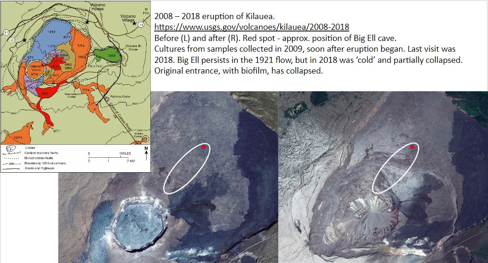
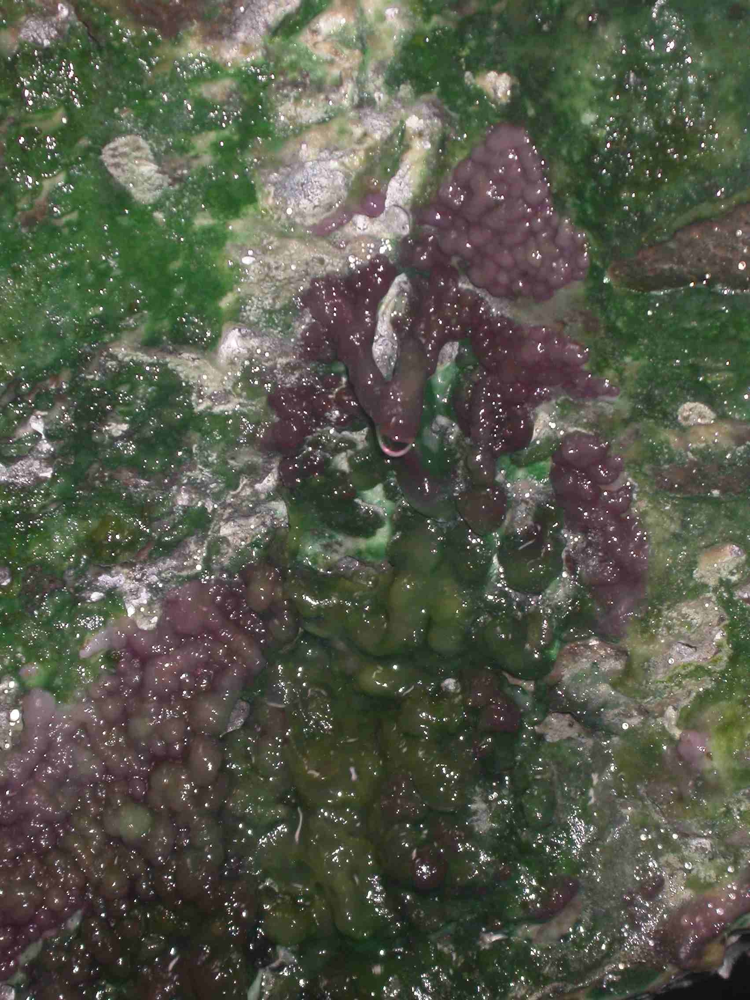
Aims of this project include to address the following:
After extracting the DNA, Illumina and MinION sequencing was done in the Advanced Studies in Genomics, Proteomics, and Bioinformatics (ASGPB) located at the University of Hawai’i at Manoa, Life Science Building 320. Genomic data for all available Fischerella species were obtained from National Center for Biotechnologu Information (NCBI). Genomes were annotated using Ulana, a Prokka pipeline written by Ethan Hill of Iolani High School. Using Rstudio, the annotations were cleaned and organized to extract the annotated genes of interest. Genes for the rpoB, rpoC, rpoC2,cbbL, and cbbS genes were extracted from the genome and aligned using MUSCLE 3.8 which can be accessed on European Molecular Biology Laboratory (EMBL-EBI):https://www.ebi.ac.uk/Tools/msa/.
*Data was obtained from field samples of a mat found in a volcanic calderea on the island, Hawai’i in 2008. DNA was extracted and sequenced at the facilities located at the University of Hawai’i at Manoa. The whole genome was annotated and cleaned and can be found under under the Raw_data folder.
Cleaning script
Data was uploaded, checked for errors, and then organized to extract the data of interest. Comparison between each species was made in terms of what genes each species shared between each other as well as what genes were shared between all species. Cleaning script can be found here: https://github.com/Yokohime/Chiyoko_ZOOL710_project3/blob/main/Code/Processing_Code/ProcessingData.R
#|echo: FALSE
knitr::include_graphics("Images/16S_Tree.png")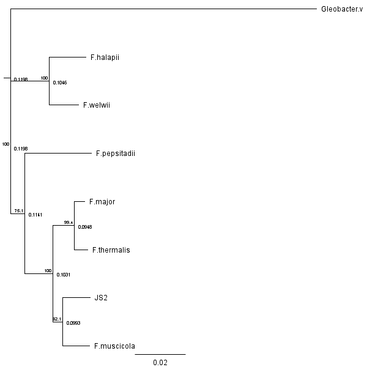
#|echo: FALSE
knitr::include_graphics("Images/16S_Matrix.png")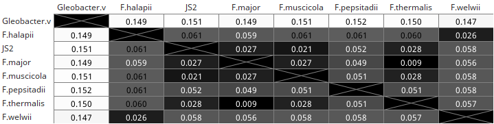
#|echo: FALSE
knitr::include_graphics("Images/rpoB_Tree.png")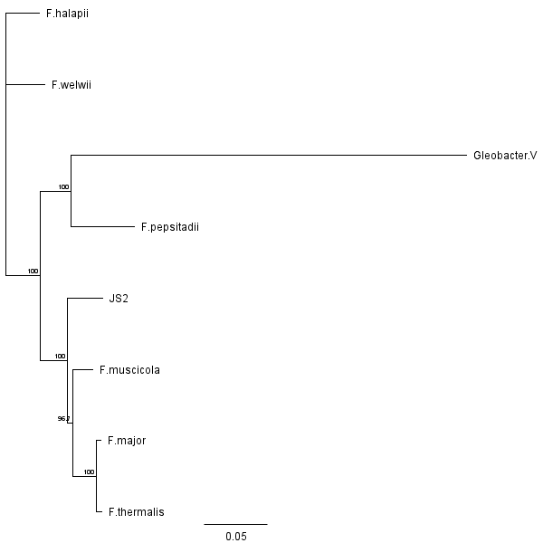
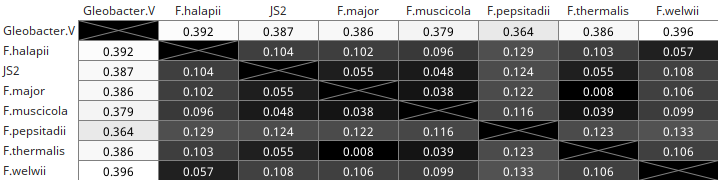
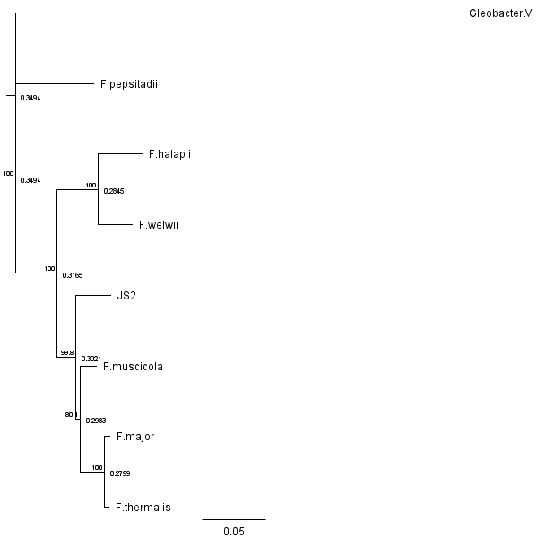
#|echo: FALSE
knitr::include_graphics("Images/rpoC_Matrix.png")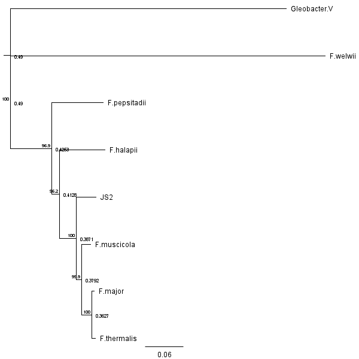
#|echo: FALSE
knitr::include_graphics("Images/rpoC2_Matrix.png")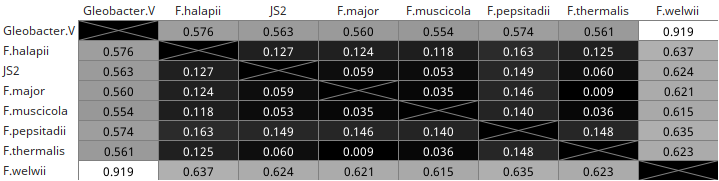
#|echo: FALSE
knitr::include_graphics("Images/rpo_Gene_Tree.png")#|echo: FALSE
knitr::include_graphics("Images/rpo_Gene_Matrix.png")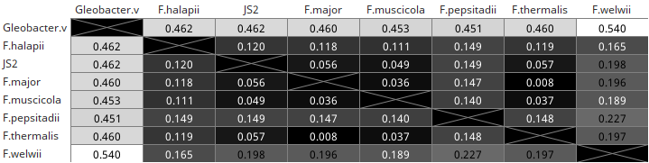

#|echo: FALSE
knitr::include_graphics("Images/cbbL_Matrix.png")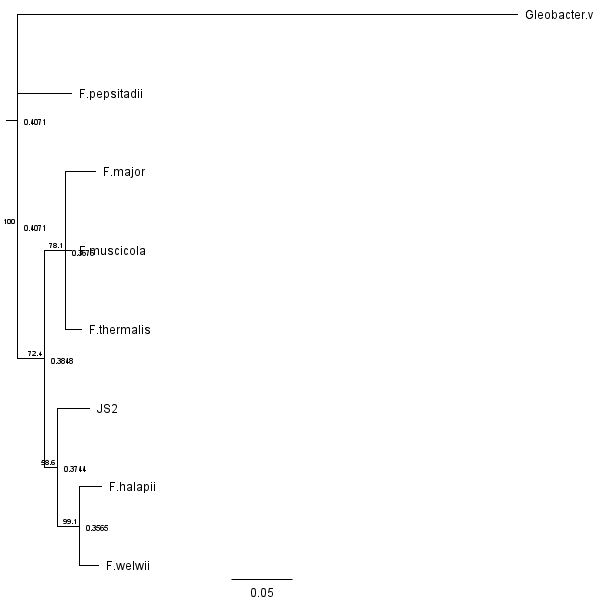
#|echo: FALSE
knitr::include_graphics("Images/cbbS_Matrix.png")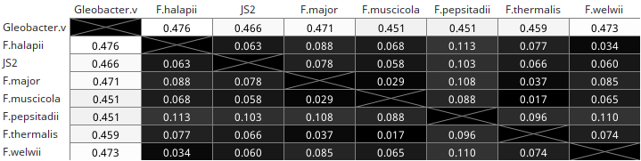
#|echo: FALSE
knitr::include_graphics("Images/cbb_Tree.png")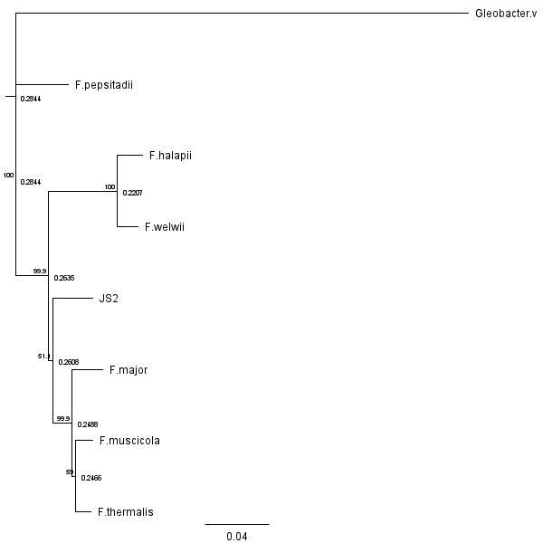
#|echo: FALSE
knitr::include_graphics("Images/cbb_Matrix.png")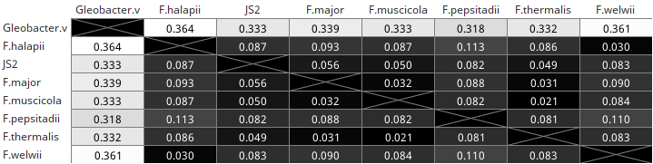
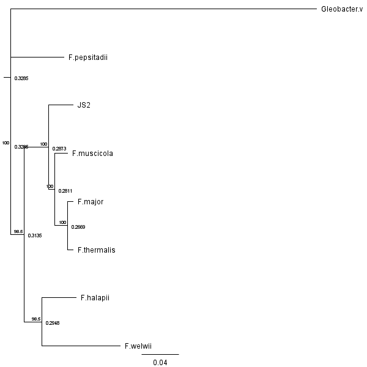
#|echo: FALSE
knitr::include_graphics("Images/All_Genes_Matrix.png")
The individual tree show different sister groups between each other and unfortunately, did not always have the Gleobacter violaceus as an outgroup as was intented.
For this project, the cleaned data was taken and analyzed using Rstudio to make graphs and plots to help visualize the data. Three questions were posed at the beginning, 1. , 2. There were toxic and inhibitory genes based on the genome annotations for JS2 and 3. Additional testing will need to be done to determine if these genes are being expressed at the time of extraction.
This study is to investigate the presence of toxic, antibiotic, and/or inhibitory genes within the whole genome of our novel species. Thus, one huge factor to this experiment will be whether or not the secondary metabolite is being expressed when the MSMS and/or extraction is preformed. Secondary metabolites such as those I am interested are not consistently produced as this would be energetically expensive. Stressing the cyanobacteria out with environmental factors such as temperature, humidity, light, or pH will most likely have little to no effect on the secondary metabolites of interest, however introducing another bacterial species has its own problems. The current struggle is to keep these cultures anexic due to the fact that contaminates will add secondary metabolites not produced by the cyanobacteria, however, they can cause the cyanobacteria to produce secondary metabolites as a response mechanism. Another way to potentially obtain secondary metabolites of interest if they are not expressed, or in high enough concentrations would be to create a vector in another organism and promote the expression in that organism since the cyanobacteria grow so slow already.
To summarize, we found that there is a difference between phylogentic genetic trees, and more specifically, there is a difference between the placement of species between the phylogentic tree based on all genes concatenated verses each individual genes.